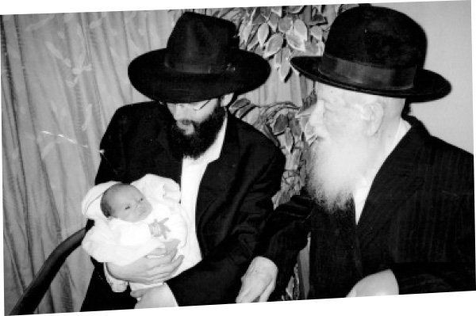

My Personal Exodus from Egypt
As we celebrate the “Time of Our Freedom,” and remember the exodus from Egypt, there are those whose memories take them back to the not so distant dark days in which they personally experienced a despotic empire from which they went out to freedom. * We spoke with Mrs. Chaya Sheiner to hear about life in communist Russia and about Chassidim who celebrated Pesach as they looked forward to their personal exodus from Egypt.

In general, someone who lived in Russia, lived in fear. The feeling was that at least half of the people walking down the street, at any given time, were KGB agents. As for the other half, we weren’t sure … Fulfilling mitzvos was illegal and anyone caught teaching Torah was sent to Siberia for years.
Despite this, my father, R’ Aharon Chazan a”h, was fearless. He did not close the windows in the house when my mother, Nechama Leah a”h, lit Shabbos candles, or when he read Pirkei Avos with us children. He also conducted chuppos outside at a time when a person did not dare do so publicly.
One time, my father conducted a chuppa for a couple whose presence in Moscow was illegal. The chassan wasn’t allowed to be there because he was a released prisoner (who had sat in jail for the crime of teaching Torah), and the kalla was from a distant city without a permit for being in Moscow. Making a chuppa for a couple like this was ten times more dangerous than performing a “regular” chuppa in the Russia, but my father did it outside anyway with all the gentile neighbors gathered round.
The next day the chassan told my father, “I wouldn’t have done it if I was in your place!” Today, this family lives in Nachalat Har Chabad in Kiryat Malachi.
What was it like to bake matza in Russia?
The entire matza baking process was illegal and had to be done in utter secrecy. My father managed to rent a mill before Pesach and he and the boys koshered the place and ground the wheat. In the early years, he would buy regular wheat and the flour was “guarded from the time of grinding.” In later years, he was able to obtain wheat that was guarded from the time it was harvested.
From the mill they had to transport the flour to the bakery. These were large quantities of flour that had to be transported on streets swarming with spies under the watchful eyes of the KGB. Only open miracles could explain the fact that they were never caught as they did this.
At first, the bakery was in the home of Reuven and Batya, Chassidim who lived in the neighboring city of Tarasivka. We would transport the matza on the train, wrapped in white pillowcases. We were nervous the entire time and still, as an adult looking back, we did not realize the full extent of the danger we were in. We did not leave the house with a series of warnings like “Make sure nobody is following you.” My father’s approach was not to be fearful when doing mitzvos and he guided us in this manner.
After a few years, the matza baking moved to my parents’ house. I remember the house full of tables, rolling pins, aprons, water jugs, and a big special oven for baking the matza. We baked machine matza for Jews who wanted it and handmade matza for Chassidim and our family. The smell of the improvised matza bakery spread throughout the neighborhood, but miraculously, no KGB agents came to our house to check out the smell.
Since he was particular about all the hiddurim, many people relied on him and wanted to eat only those matzos that were baked by us. For example, the Machnovka Rebbe, R’ Avrohom Yehoshua Heschel Twersky zt”l, would bake matzos mitzva by us on Erev Pesach, at midday. In the baking of these matzos, only our family participated. Of course, the baking was done with the utmost hiddur.
When we married, my husband Moshe Sheiner joined the baking and took responsibility for the dangerous job of transferring the matzos to their destinations. He would check to see which train compartment had a policeman and would enter a different compartment. Another Chassid would always accompany him whose job it was to keep a lookout and warn him about impending danger.
It once happened that a policeman made the rounds on the train and stopped my husband and examined the contents of his belongings. The Chassid accompanying him noticed this and did not delay. He quickly ran to the “bakery” and told them that the shliach was caught and the KGB were probably on their way. The bakery immediately stopped operating. All the machines were dismantled, the tools were hidden, the workers were sent home and the house looked like a normal home.
In the meantime, the policeman asked my husband to explain the matzos that were in his bag and he said they were biscuits. This policeman was not familiar with Jewish customs and did not know what matzos are. Not finding anything incriminating, he dismissed him. Since the Chassid escorting him was usually at a distance, my husband did not realize that he had left and had gone back to the “bakery” so he continued on his way, bringing the matzos to their destination and returning to the “bakery” to get another few packages to distribute.
שIt is not clear whose surprise was greater, my husband’s when he saw there was no sign of any baking where they had been busy working so recently, or my family’s when they hadn’t believed they would see him again, alive and well and most importantly, free!
How did the “Z’man Cheiruseinu” look under these conditions?
On Pesach there was not much to eat: matza, potatoes, borscht (fermented beets), eggs, chicken and some schmaltz made out of goose fat, with which we made some latkes. We could not use carrots, for example, because in the winter, in order to preserve them, they would put flour into the sacks of carrots. And yet, we were not hungry on Pesach. We were hungry only on Erev Pesach. Despite the dearth of products, we children followed the halacha and did not eat either chametz or matza on Erev Pesach. There were no bananas like today … So on Erev Pesach we mainly ate sugar cubes.
By the way, my grandmother a”h, who was the wife of R’ Zushe Friedman z”l of Odessa, was particular about many hiddurim on Pesach. In addition to being particular about not a crumb of matza getting into the plates because of gebrochts, she was also particular not to leave plates from one day to the next but washed them right away, after meals. Pesach night too, even though it was late and we were tired, we would wash all the dishes and not leave anything for the next day.
I remember one time when my father got grapes about two months before Pesach. A crate of grapes was usually not available and we were very excited because we could make wine for Pesach! (We usually made wine out of raisins.) We children were kept away from it so we wouldn’t touch it – this was going to be used to make wine for Pesach!
My father wanted sugar so he could make it quickly and seal the bottles until Pesach. But in the excitement or because of haste, they brought my father a sack of flour instead of a sack of sugar. The sacks in Russia did not have the contents written on them and my father noticed the mistake only after he had mixed the flour into the grapes. Of course, the wine was not kept for Pesach and that year we had to use raisin wine.
Pesach night was special. There were always guests and when my father recited Hallel it was an inspired atmosphere. The guests, who were not religious, were greatly influenced by the atmosphere and in many cases were inspired to greater levels of commitment. Another thing I remember is the sight of my grandmother crying. Every year she cried when she said the words in Hallel, “a joyous mother of children.” This made her recall her children who were killed al kiddush Hashem. The KGB gave them two options, to send their children to the communist public school or to die. They did not consider sending their children to a public school as a viable alternative. They chose death, being moser nefesh for the chinuch of their children.
What do you remember of your “exodus from Egypt” – your leaving Russia?
“My father, and my father-in-law, Efraim Sheiner a”h, asked the Rebbe a number of times for a bracha that we leave Russia. The Rebbe’s bracha was fulfilled and we left. We received the visas in 5727 before Purim. Most of the families who received visas would prepare for months but we went quickly. Our oldest daughter Batya was turning six and there is compulsory schooling from the age of seven. So it was important to us to leave Russia as soon as possible. Since there weren’t often flights, we left by train. We left quickly so that most of those who heard that we got visas, heard about it after we had already left.
We celebrated Purim in a hotel in Vienna. My husband read the Megilla and other families that were with us came to hear it. That was a very special Purim.
The Jewish Agency made a Purim party that was attended by about 100 olim, some from Russia and some from Latvia and Lithuania. The children sang songs, some in Russian, some in French, and my daughter Batya also wanted to sing. She was the only one who sang in Ivrit! She sang a Jewish song, “Hinei Ma Tov U’Ma Na’im.” It was unusual because Russian children did not know Jewish songs, let alone in Hebrew. They gave her a lengthy applause and showered her with gifts and chocolate, which she couldn’t eat because of kashrus reasons.
The reason she sang it was simple. She only knew Jewish songs! These were the songs we sang at home, despite the fear and the danger. It was the atmosphere at home. We gave the children a Jewish-Chassidic education while we lived under communist rule. I think that if in Russia these were the songs heard in our home, then certainly here in Eretz Yisroel we should have our children listen only to Jewish-Chassidic songs.
We stayed at the hotel briefly until our flight to Eretz Yisroel. The food wasn’t kosher and we managed with bread from the local bakery that was under the supervision of a Vizhnitzer Chassid. My daughter Devorah was two months old at the time, but we did not look for leniencies in kashrus. The mashgiach saw we weren’t eating at the hotel and he brought us a can of meat from Eretz Yisroel. My husband checked the hechsher and saw that although it was kosher, it was not mehudar. He politely gave it back to the mashgiach who was amazed by our hiddur in kashrus under these circumstances.
About two months later, an Admur came to Vienna accompanied by his shamash (attendant) who was a relative of mine. They were on their way from the United States to Eretz Yisroel and the shamash came to visit the mashgiach that we knew. The mashgiach told him how impressed he was by the family that came out of Russia: the father with a full beard, the mother and daughters dressed modestly, and their fulfillment of mitzvos which gave no indication that they had recently lived under communist rule. The guest asked who these people were and to his surprise, discovered it was his cousin.
What were your feelings upon arriving in Eretz Yisroel?
When I landed in Eretz Yisroel, we were welcomed by our parents, relatives who arrived in Eretz Yisroel before we did, friends and Chassidim, a huge crowd. They all danced and sang to “MiMitzrayim G’altanu.” We were flying high.
All the hardships of acclimating and parnasa that are typical of aliya seemed insignificant. We felt fortunate that we could keep Torah and mitzvos without interference, go to shul without fear, give our children a Jewish-Chassidic chinuch without having to hide, and work without having to come up with an excuse each week about our absence on Shabbos.
We arrived between Purim and Pesach. Our first Pesach in Eretz Yisroel, we felt like we had actually left Egypt. We walked the streets of B’nei Brak and from every house we heard Jewish songs, sung openly. It was moving and thrilling. Whenever I remember this I relive it and feel what I felt then.
I wish us all that just as we merited to leave Russia, so too, may we soon leave galus with the true and complete Geula with all the Jewish people.
Beis Moshiach (staff). "My Personal Exodus from Egypt." Beis Moshiach, no. 923 (April 9, 2014).